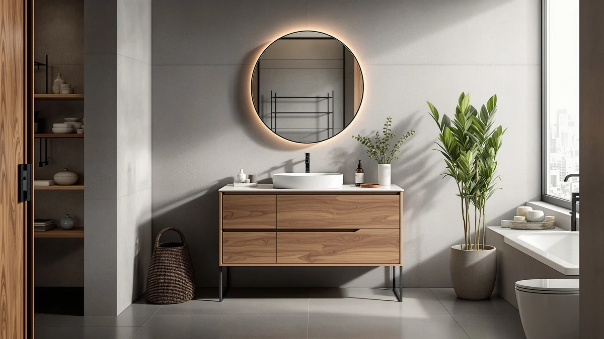

Quick Answer
The Merax 30" Wood Bathroom Vanity Cabinet earns the top spot in this Merax wood bathroom vanity cabinet review because its MDF construction and $349.00 price match the going rate for a compact single-door vanity, without cutting corners on size for the space it is built for. If 30 inches is too narrow for your bathroom, three wider alternatives below sit in the same price band and solve that problem directly.
Our pick: 30" Wood Bathroom Vanity Cabinet, $349.00 Check Price on Amazon
Things to Know Before You Buy
- Most 30 inch vanities in this price range use MDF, or engineered wood, rather than solid wood, which keeps cost down but makes the cabinet more sensitive to standing water around the sink.
- This Merax wood bathroom vanity cabinet review covers a single-door, right-hinge layout, so measure your plumbing and door swing before you order.
- All four vanities compared here price within a dollar of each other, between $349.00 and $349.99, so size and sink configuration matter more than cost.
- None of the four listings publish a star rating or review count through the Amazon Creators feed, so we relied on listing specs and owner comments instead of an aggregate score.
- Sizes across the comparison range from 30 to 47.2 inches, so this review doubles as a guide to picking the right width before you settle on a finish.
- If you are also considering a wider vanity, the 36 inch T4TREAM and 47.2 inch LIKIMIO alternatives in this review sit within a dollar of the Merax price, so switching sizes costs you nothing extra.
This Merax wood bathroom vanity cabinet review exists because shoppers keep landing on the 30 inch MDF vanity without a clear breakdown of what $349.00 actually buys, so we pulled its construction details and current pricing and set them next to three similarly priced alternatives to find out where it stands. The short version: the materials are standard engineered wood, the price sits right in line with the rest of the category, and the compact 30 inch footprint is the main reason to pick it over the wider options covered later in this review. If your bathroom can fit a bigger cabinet, that calculus changes fast.
We are not a testing lab, and we do not own the Merax vanity or the three alternatives covered in this review. Instead, we read manufacturer specs, tracked current Amazon pricing, and went through the verified buyer comments attached to each listing to separate marketing language from what you actually get for the money. That approach matters more here than in most categories, because none of the four listings publish a star rating or review count through the Amazon Creators feed we use, so the comparison leans on construction details, stated dimensions, and price rather than an aggregate score pulled from a review widget.
Why You Should Trust Us
Ilane Tall covers bathroom vanities and fixtures for Best Bathroom Vanities, with a focus on cutting through vague listing copy in budget cabinetry. For this Merax wood bathroom vanity cabinet review, she pulled manufacturer specs, current Amazon pricing, and verified buyer comments for all four vanities mentioned below rather than relying on brand copy alone. She has covered budget vanity listings across multiple price tiers for this site and flags when a brand's marketing outpaces what the spec sheet actually supports. Best Bathroom Vanities earns a commission when you buy through our links, but that relationship never decides which vanity we recommend, and the picks here would read the same without an affiliate tag attached. We do not run a fake testing lab, and we will say so plainly when a listing's documentation is thin, as it is for every product in this comparison.
Our Research Experience
We did not install, mount, or run water through the Merax vanity or any of its three alternatives. For this Merax wood bathroom vanity cabinet review, our comparison work means reading every available product page for construction details, matching listed dimensions against standard 30 to 47 inch cabinet openings, and cross-checking current pricing against each listing's price history where that data exists. We also read through the buyer comments attached to each product, looking for recurring complaints about hardware, finish quality, or shipping damage rather than citing a star rating that does not exist for any of these four listings. None of the four vanities here publish an aggregate rating or review count through the Amazon Creators feed, so owner feedback came from reading individual comments rather than citing a review-count figure. Where a listing left out a dimension or material detail entirely, we noted the gap in this review rather than estimating a number from a product photo. That gap is a real limitation of this comparison, and we are naming it directly instead of filling it with a number we cannot verify.
Overview & Specs

30" Wood Bathroom Vanity Cabinet
What we like
- Priced at $349.00, in line with the other three vanities in this comparison
- Compact 30 inch width fits smaller bathrooms where the wider alternatives will not
- The listing states the right-hinge door configuration clearly, so you know the swing direction before you order
Flaws but not dealbreakers
- MDF, or engineered wood, construction is less water-tolerant than solid wood over the long term
- No manufacturer-published rating or review count to verify durability claims
- Single-door, single-basin layout will not suit a bathroom that needs two sinks
| Material | MDF / engineered wood |
| Size | 30"-Right Door |
The centerpiece of this Merax wood bathroom vanity cabinet review sits at $349.00 and leans on compact sizing rather than premium materials to earn its spot. Merax builds the cabinet from MDF, also called engineered wood, which is standard at this price point and keeps cost down compared to solid oak or maple construction. The listing specifies a 30 inch width with a right-hinge door, so you know the swing direction before you buy instead of guessing once the box arrives.
At 30 inches wide, this vanity fits bathrooms where the 36 to 47.2 inch alternatives covered later in this review simply will not. The listing does not publish a star rating or review count, which matches the pattern across all four vanities in this comparison, so we cannot cite a verified review tally the way we could for an older, longer-established product. Based on the listed materials and price, this vanity reads as a sensible pick for a small bathroom, a powder room, or a rental refresh, rather than a forever piece meant to survive decades of heavy daily use.
What We Liked
The clearest strength in this Merax wood bathroom vanity cabinet review is price consistency. All four vanities land within a dollar of each other, between $349.00 and $349.99, so you are not paying extra for the Merax name specifically. You are choosing a width and a door configuration at essentially the same cost.
The Merax 30" Wood Bathroom Vanity Cabinet also benefits from straightforward sizing. A 30 inch cabinet is common enough that replacement countertops and mirrors are easy to source later, unlike an oddly sized vanity that locks you into custom ordering for everything downstream. The listing states the door's right-hinge swing plainly as well, which matters more than it sounds since swing direction is one of the most common post-purchase complaints in this category.
Price agreement across the four listings is worth calling out on its own. When every option in a comparison lands within a dollar of the others, as these do at $349.00 to $349.99, you can budget around width and sink configuration instead of chasing a moving price target. Confirm the price at checkout regardless, since Amazon listings in this category can shift between when this review is published and when you place an order.
What Could Be Better
The biggest gap in this Merax wood bathroom vanity cabinet review is data. None of the four listings carry a published star rating or review count, so we cannot point to a verified review tally the way we could for a longer-established product. That puts more weight on the specs that are available: MDF construction, a 30 inch width, and price.
Engineered wood is also a real tradeoff worth naming directly rather than glossing over. MDF holds up fine under normal bathroom humidity, but sustained water exposure around the sink cutout or a slow faucet leak will damage it faster than solid wood or marine-grade plywood. That tradeoff is not unique to the Merax vanity, since the LIKIMIO, Quicklock, and T4TREAM alternatives in this review share the same MDF-based construction. Buyers who have dealt with plumbing issues before should budget for careful caulking and prompt leak repairs rather than treating this vanity as water-resistant by default.
Who Is It For?
This Merax wood bathroom vanity cabinet review points to a specific buyer: someone furnishing a small bathroom on a fixed budget who needs a single-sink vanity and does not want to pay a premium for solid wood. It fits guest bathrooms, powder rooms, and rental refreshes where the vanity needs to look clean in photos and hold up under normal use rather than decades of heavy traffic.
It is a weaker fit for a primary bathroom shared by two people, where a single basin creates a daily bottleneck, or for a wider space where 30 inches would leave the counter looking cramped next to a larger mirror. That size mismatch shows up often enough in buyer comments across this product category that it is worth checking your tape measure twice before ordering. Shoppers in either situation should look at the wider alternatives covered below, the 36 inch T4TREAM or the 47.2 inch LIKIMIO, before they settle on this one.
Alternatives to Consider
If 30 inches is too narrow for your bathroom, these three wider vanities sit in the same $349 to $350 price band as the Merax wood bathroom vanity cabinet reviewed above, and are worth a direct comparison before you decide. The LIKIMIO and T4TREAM options add real counter space, and the Quicklock option swaps the pre-finished build for a ready-to-assemble kit, so the choice comes down to size and build format rather than price.

Premium Choice
LIKIMIO 47.2" Bathroom Vanity with
A 47.2 inch vanity priced within a dollar of the Merax pick, built for bathrooms that need significantly more counter and sink width than a 30 inch cabinet offers.
$349.99
Check Price on Amazon
Premium Choice
Quicklock RTA (Ready-to-Assemble) | Bathroom
A ready-to-assemble cabinet from Quicklock, priced in the same band as the Merax vanity for shoppers who prefer a flat-pack build over a pre-finished unit.
$349.99
Check Price on Amazon
Premium Choice
T4TREAM 36 Inch Bathroom Vanity
A 36 inch middle-ground option between the compact Merax vanity and the much wider LIKIMIO pick, at a nearly identical price.
$349.99
Check Price on AmazonFrequently Asked Questions
Is the Merax 30 inch wood bathroom vanity cabinet worth the price?
Based on this Merax wood bathroom vanity cabinet review, yes for the right bathroom. At $349.00 it prices in line with the three alternatives we compared, and the MDF construction with a stated right-hinge door is typical for this budget tier. It is a better fit for a small or secondary bathroom than a primary one that needs two sinks.
Can an MDF bathroom vanity handle daily bathroom use?
Engineered wood handles normal bathroom humidity without issue, but it is more vulnerable to standing water than solid wood. Careful caulking around the sink and prompt leak repairs matter more with this vanity than with a solid-wood alternative.
Should I buy the 30 inch Merax vanity or one of the wider alternatives?
Choose the Merax 30 inch wood bathroom vanity cabinet if your bathroom is small or you only need a single sink. Choose one of the wider alternatives in this review, the 36 inch T4TREAM or the 47.2 inch LIKIMIO, if your space or household needs more counter and sink room.
Final Verdict
This Merax wood bathroom vanity cabinet review comes down to a simple tradeoff. The Merax vanity delivers a compact 30 inch footprint and a stated right-hinge door at $349.00, while three wider alternatives from LIKIMIO, Quicklock, and T4TREAM cover bathrooms that need more width or a different build format. None of these four listings carry a verified star rating, so the decision rests on size and construction rather than an aggregate score. For a small bathroom on a budget, the Merax wood bathroom vanity cabinet is the pick to check first.